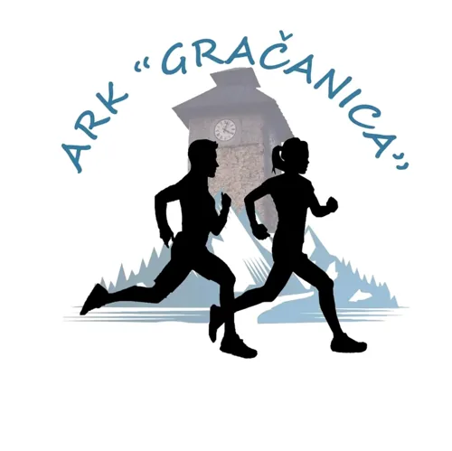
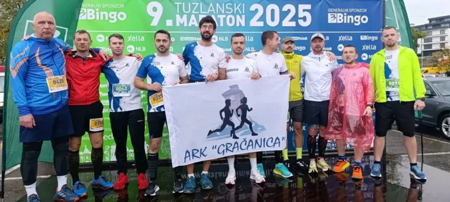
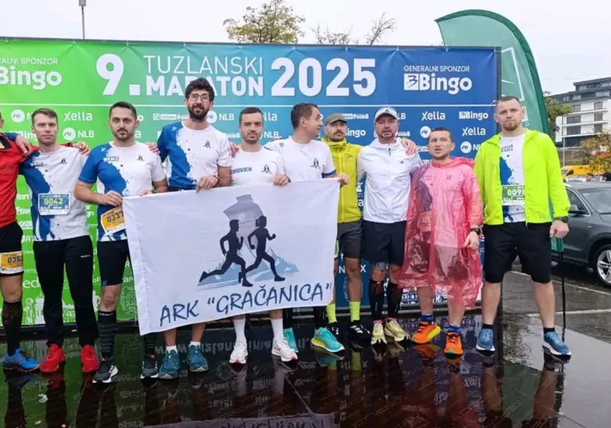
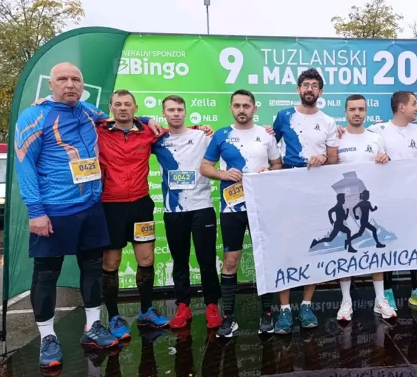
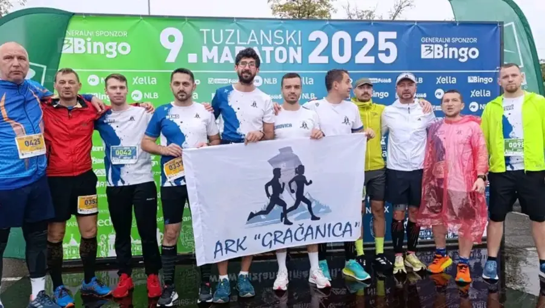
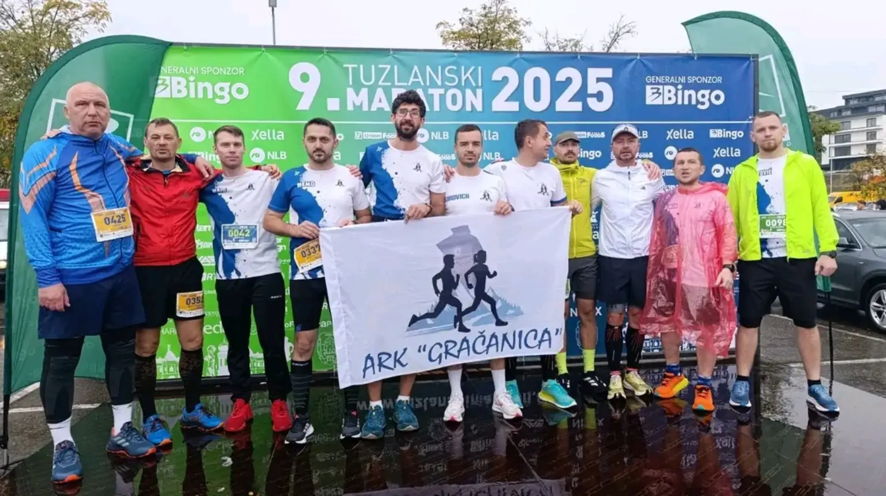

Zajednički treninzi
Treninzi u grupi pomažu da ostaneš motivisan i da lakše izgradiš kontinuitet.

ARK GračanicaTrčanje • zdravlje • zajednica
Atletsko-rekreativni klub ARK Gračanica okuplja rekreativce, trkače i ljubitelje aktivnog načina života.
O klubu
ARK Gračanica promoviše zdrav život, zajedničke treninge i trkačke događaje u gradu.

Zašto ARK Gračanica
Bez obzira da li tek počinješ ili želiš napredovati, klub pruža motivaciju, društvo i sigurniji put do cilja.
Treninzi u grupi pomažu da ostaneš motivisan i da lakše izgradiš kontinuitet.
Savjeti, tempo, priprema i iskustvo članova mogu pomoći početnicima i rekreativcima.
Klub okuplja ljude koji vole sport, druženje i aktivan način života.
Gračanica 5K / 10K
Najvažnije informacije o startu, cilju, ruti, programu dana i trenutnom statusu prijava.

Idealna distanca za početnike i brze rekreativce. Ravna gradska ruta, jasne oznake i podrška volontera.

Za trkače koji žele duži izazov i tempo kontrolu kroz poznate gradske dionice.

Najvažniji dio događaja: ljudi, energija, navijanje i kilometri koji povezuju ovaj grad.
Program dana
Satnica, lokacije, okrepne stanice i upute za učesnike prikazane su u nastavku.
Voda, podrška volontera i jasno označene tačke na ključnim dijelovima rute.
Okupljanje, zagrijavanje, startni paketi i ulazak u koridore prije starta.
Medalje, osvježenje, fotografije i prostor za učesnike nakon završene utrke.
Pravila
Osnovne informacije za učesnike prije dolaska na start.
Učestvovati mogu rekreativci, takmičari i svi koji su zdravstveno spremni za odabranu distancu.
Kategorije, starosne grupe i nagrade bit će objavljene u zvaničnom pravilniku utrke.
Da. Startni paket se preuzima prema satnici koju klub objavi prije utrke.
Ruta je označena, a volonteri su raspoređeni na ključnim tačkama staze.
Ako prijave nisu otvorene, potrebno je pratiti zvanične kanale kluba za novi termin.
Iskustva
Kratke poruke ljudi koji treniraju, trče i napreduju uz ARK Gračanica.
Trening je mnogo lakši kada imaš ekipu koja te pokrene i kad ti se ne ide.
Bitno je da dođeš, kreneš i polako gradiš naviku.
Gračanica 5K okuplja trkače, porodice i lokalnu zajednicu.
Running program
Unesi distancu i ukupno vrijeme. Dobiješ prosječan tempo po kilometru.
Unesi ciljnu distancu i pace u formatu 5:30.
Mapa
Ruta 5K/10K Gračanica za trkače.
Galerija
Naša arhiva fotografija i atmosfera sa trka.

Partneri i sponzori
Partneri i sponzori koji podržavaju rad kluba i organizaciju događaja.
Prijava
Prijave za trku su trenutno zatvorene. Ovu formu možete koristiti za upit o treninzima, volontiranju ili interes za naredni događaj.
FAQ
Kratke informacije za nove članove, učesnike trke i rekreativce koji žele trenirati sa klubom.
Prijava se vrši kroz sekciju prijave na stranici ili preko zvaničnih objava kluba.
Da. Početnici su dobrodošli. Treninzi se mogu prilagoditi rekreativcima i osobama koje tek kreću.
Informacije možete pronaći na Facebook stranici ARK Gračanica i kroz zvanične objave kluba.
Informacije o preuzimanju objavljuju se prije trke, najčešće uz detalje o startnoj zoni i satnici.
Da. 5K ruta je dobra za rekreativce, dok je 10K bolja za trkače koji žele veći izazov.
Rezultati, fotografije i obavještenja objavljuju se na web stranici i zvaničnim kanalima ARK Gračanica.
Pridruži se
Javi se klubu, dođi na trening i postani dio trkačke zajednice ARK Gračanica.